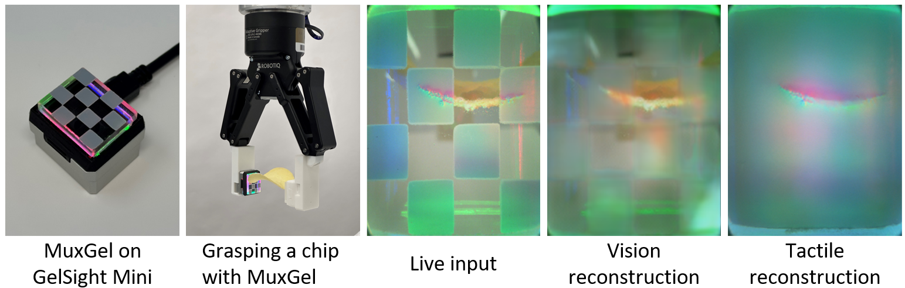
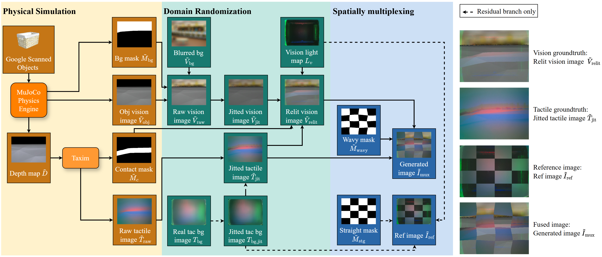
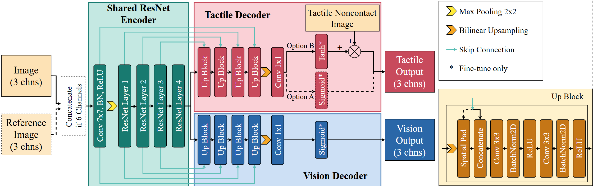

MuxGel enables simultaneous visuo-tactile sensing via spatial multiplexing.
This project proposes MuxGel, a spatially multiplexed sensor that captures both external visual information and contact-induced tactile signals through a single camera. By using a checkerboard coating pattern, MuxGel interleaves tactile-sensitive regions with transparent windows for external vision. This design maintains standard form factors, allowing for plug-and-play integration into GelSight-style sensors by simply replacing the gel pad. To recover full-resolution vision and tactile signals from the multiplexed inputs, we develop a U-Net-based reconstruction framework. Leveraging a sim-to-real pipeline, our model effectively decouples and restores high-fidelity tactile and visual fields simultaneously. Experiments on unseen objects demonstrate the framework's generalization and accuracy. Furthermore, we demonstrate MuxGel's utility in grasping tasks, where dual-modality feedback facilitates both pre-contact alignment and post-contact interaction. Results show that MuxGel enhances the perceptual capabilities of existing vision-based tactile sensors while maintaining compatibility with their hardware stacks.

Large-scale physics-based simulation pipeline for visual-tactile data generation.

MuxNet Architecture. A dual-stream framework with a shared ResNet-34 encoder. It takes a 6-channel concatenated tensor (observation + reference) to simultaneously reconstruct high-fidelity vision and tactile modalities. The tactile branch employs a residual learning strategy (Option B) to capture precise contact deformations.
@article{hu2026muxgel,
title={MuxGel: Simultaneous Dual-Modal Visuo-Tactile Sensing via Spatially Multiplexing and Deep Reconstruction},
author={Hu, Zhixian and Xu, Zhengtong and Athar, Sheeraz and Wachs, Juan and She, Yu},
journal={arXiv preprint arXiv:2603.09761},
year={2026}
}